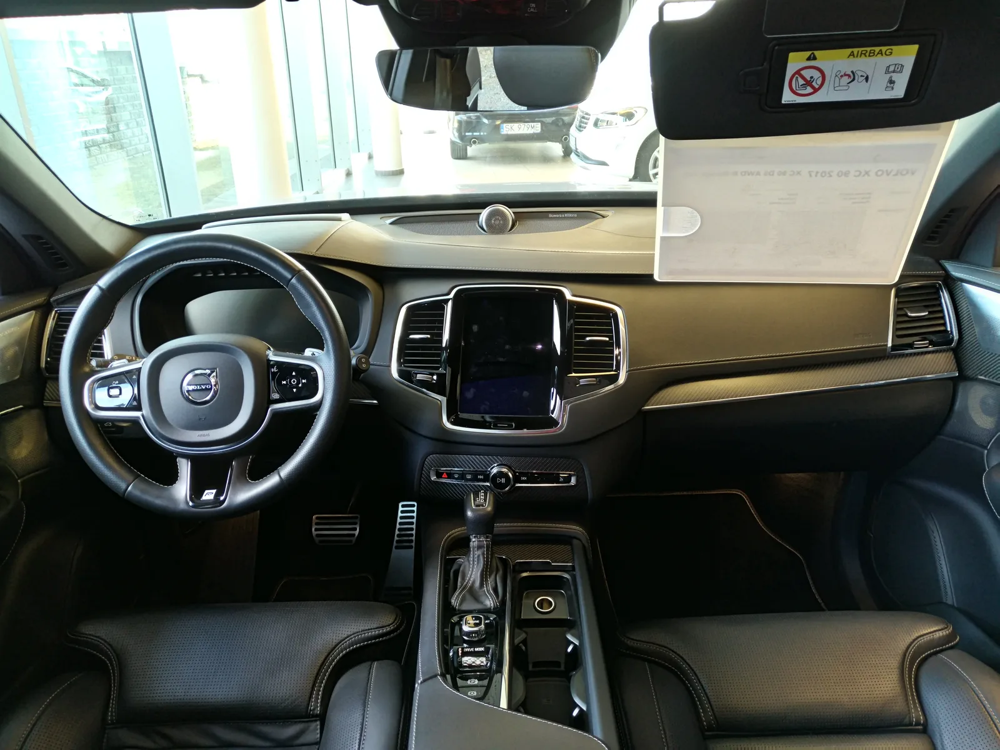
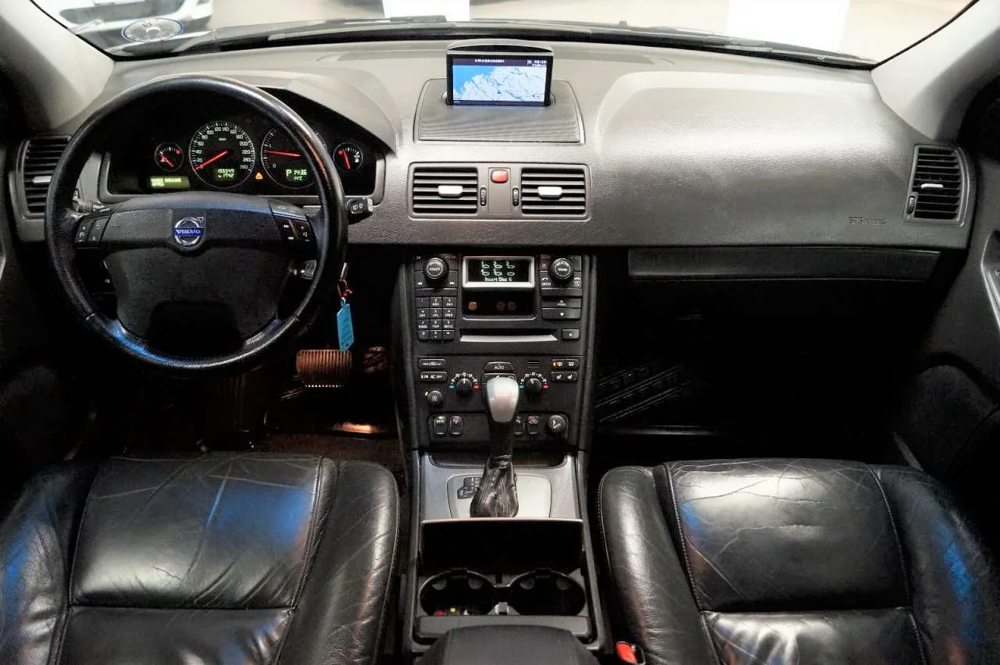
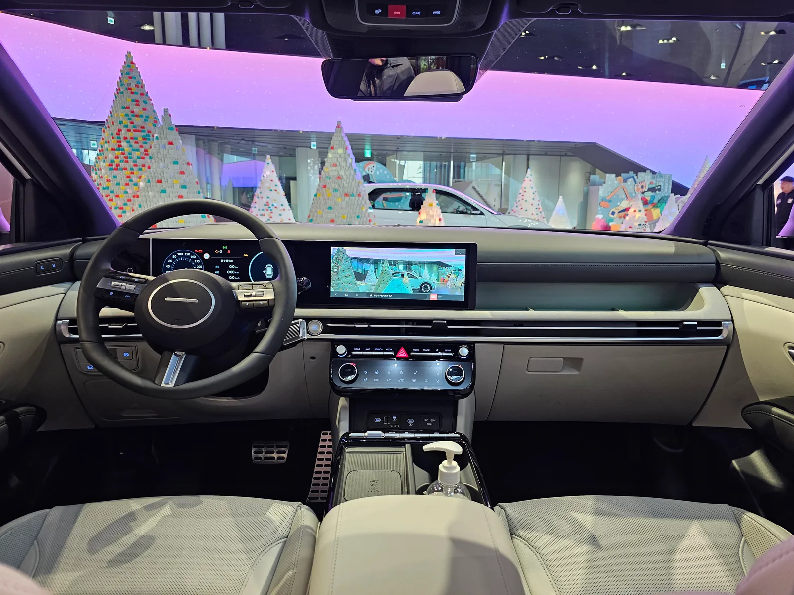
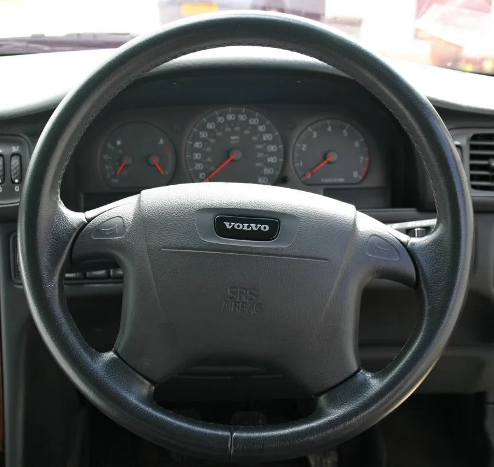

▲ 최근 볼보 실내는 세로형 터치스크린 하나에 대부분의 기능을 몰아넣는 방식이었다 ⓒ Wikimedia Commons
"화면 하나로 다 되는 차"를 밀어붙였던 볼보가 방향을 바꾼다. 볼보 디자인을 총괄하는 토마스 잉엔라트는 최근 "수많은 고객과 자동차 언론으로부터 지나치게 디스플레이에 의존하는 조작 방식에 대해 신랄한 지적과 피로감을 전달받았다"고 인정하며, 앞으로 나올 신차에 물리 버튼을 다시 늘리겠다고 밝혔다.
스마트폰처럼 화면 하나로 승부하던 자동차 업계가 실제 도로 위 안전성과 사용 편의성의 한계에 부딪히고 있다는 신호로 읽힌다. 특히 안전을 최우선 가치로 내세워온 볼보이기에, 이번 방향 전환은 더 무겁게 다가온다.
1. 정확히 뭐가 버튼으로 돌아오나
볼보가 되살리겠다고 예고한 건 '주행 중 빈번하게 조작해야 하는' 기능들이다. 오토트리뷴 보도에 따르면 에어컨·히터 같은 공조장치, 시트 통풍 및 열선, 그 밖의 주행 관련 기본 조작계가 우선 대상이다. 이런 기능들은 몇 초 안에 눈으로 확인하지 않고도 손끝 감각만으로 조작할 수 있어야 한다는 게 핵심이다.
| 구분 | 기능 예시 | 방식 |
|---|---|---|
| 자주 쓰는 기능 | 공조장치(온도·풍량), 시트 통풍·열선, 기본 주행 조작 | 물리 버튼·다이얼 복귀 |
| 복잡한 설정 | 내비게이션, 미디어·엔터테인먼트, 차량 세부 설정 | 터치스크린 유지 |
📍 잉엔라트가 든 비유 — "라이카 카메라처럼"
디자인 총괄 토마스 잉엔라트는 해외 매체 인터뷰에서 "버튼을 줄줄이 늘어놓지는 않을 것"이라며 라이카 카메라를 예로 들었다. 항상 화면에 떠 있어야 하는 기능은 화면에 두지 않는 게 원칙이라는 것이다. 그는 "화면은 유연성과, 늘 표시할 필요는 없는 정보를 보여주는 데 써야 한다"며 "터치스크린은 그것이 잘하는 일에 쓰고, 지금보다 버튼 몇 개를 더 되살리는 것"이라고 설명했다.
2. 언제, 어떤 차부터 — 2027년 콘셉트카가 신호탄
변화는 하루아침에 오지 않는다. 볼보는 지난 9월 스톡홀름에서 열린 전략 발표 행사에서, 창립 100주년을 맞는 2027년 봄 차세대 디자인 방향을 보여줄 콘셉트카를 공개하겠다고 밝혔다. 1960~1990년대 볼보 특유의 각진 박스형 차체에서 영감을 받은 형태가 될 것으로 예상되며, 이 콘셉트카가 향후 볼보 실내 디자인의 방향타 역할을 하게 된다.

▲ 2015년 등장한 2세대 XC90의 세로형 터치스크린 '센서스'는 당시로선 파격이었지만, 스티어링 휠과 센터 콘솔에는 여전히 물리 조작계가 남아 있었다 ⓒ Wikimedia Commons
잉엔라트에 따르면 이런 방향 전환은 콘셉트카 한 대로 끝나지 않는다. 2030년까지 순차 출시될 글로벌 신차 13종에 새 디자인 언어와 함께 물리 버튼이 확대 적용될 계획이다. 즉 지금 당장 판매 중인 모델이 바뀌는 게 아니라, 앞으로 나올 신차 세대 전체의 기본값이 바뀌는 것으로 봐야 한다.
3. 왜 지금인가 — 터치스크린 만능주의에 대한 반발
이번 결정의 배경에는 업계 전반의 흐름 변화가 있다. 스마트폰처럼 화면 크기와 인포테인먼트 기능으로 경쟁하던 자동차 업계가, 실제 주행 상황에서의 안전성·편의성 한계에 부딪히고 있다는 지적이 꾸준히 나왔다.
✅ 터치스크린 중심 조작계가 받아온 지적
· 에어컨 온도 하나 바꾸려 해도 메뉴를 몇 단계씩 눌러야 하는 불편
· 화면을 눈으로 보며 조작해야 해 주행 중 시선이 도로를 벗어나는 시간이 길어짐
· 손끝 감각만으로 위치를 찾을 수 있는 물리 버튼과 달리, 매번 시각적 확인이 필요
· 추운 날 장갑을 끼거나 손이 젖었을 때 터치 인식이 잘 안 되는 사례
실제로 유럽 교통안전위원회(ETSC)는 터치스크린 조작이 과제에 따라 5초에서 40초까지 시선을 도로에서 떼게 만들 수 있다고 지적한 바 있다. 고속도로 주행 속도를 감안하면 이 시간 동안 차량은 수백 미터를 이동하게 된다.
📍 유로 NCAP, 2026년부터 물리 버튼을 안전평가에 반영
유럽 신차 안전성 평가 프로그램인 유로 NCAP은 2026년부터 방향지시등, 비상등(콤팩트), 경적, 와이퍼, 긴급 SOS 등 핵심 기능 5가지에 물리적이고 촉각으로 구분 가능한 버튼이 없으면 최고 등급인 5-Star를 받기 어렵도록 평가 기준을 바꿨다. 유럽 소비자의 약 90%가 차량 구매 시 유로 NCAP 등급을 참고한다는 점을 고려하면, 완성차 업체 입장에서는 사실상 선택의 여지가 크지 않은 규제다.
유로 NCAP의 물리 버튼 관련 정책 변화는 유럽 교통안전위원회(ETSC) 발표 자료에서 자세히 확인할 수 있다. ETSC 발표 바로가기

▲ 터치스크린이 보편화되기 전 볼보의 실내는 온도·풍량·오디오까지 대부분 물리 버튼과 다이얼로 조작하는 방식이었다 ⓒ Wikimedia Commons
4. 볼보만의 일이 아니다 — 현대차·포르쉐도 방향 선회
물리 버튼 회귀는 볼보 한 곳의 결정이 아니라 업계 전반의 흐름에 가깝다. 현대차는 2026년 9월 공개한 5세대 완전변경 '디 올 뉴 투싼'과 2024년 아이오닉5 부분변경 모델 등에서 공조·열선·볼륨 조작을 화면에서 물리 버튼으로 되돌리는 작업을 진행 중이며, 화면과 물리 버튼이 함께 쓰이는 방식으로 전환하고 있다. 포르쉐와 스바루 역시 공조·주행 관련 주요 기능에 노브와 버튼을 다시 적용하는 쪽으로 방향을 수정했다.

▲ 현대차도 투싼 부분변경 모델부터 공조 조작계를 화면에서 물리 다이얼·버튼으로 되돌렸다 ⓒ Wikimedia Commons
| 브랜드 | 동향 |
|---|---|
| 볼보 | 2027년 콘셉트카 → 2030년까지 신차 13종에 공조·열선 등 물리 버튼 확대 |
| 현대차 | 투싼·아이오닉5 등에서 공조·열선·볼륨 조작을 물리 버튼과 화면 병행 방식으로 전환 |
| 포르쉐·스바루 | 공조·주행 관련 주요 기능에 노브·버튼 재적용 |
| 폭스바겐 | 최근 신형 모델에서 공조·볼륨 조작용 버튼을 고객 불만을 반영해 복원 |
공통적으로 나타나는 패턴은 '화면이냐 버튼이냐'의 양자택일이 아니라, 화면과 버튼을 함께 쓰되 자주 쓰는 기능은 버튼으로 옮기는 절충안이라는 점이다.
5. 안전을 팔아온 볼보이기에 더 무거운 결정
볼보는 3점식 안전벨트를 세상에 처음 무상 공개한 브랜드로, 안전을 가장 중요한 정체성으로 내세워왔다. 그런 볼보가 터치스크린 중심 조작계로 인한 안전성 논란의 한복판에 놓였다는 건 아이러니한 지점이었다.

▲ 터치스크린 이전 세대 볼보는 스티어링 휠의 물리 버튼과 아날로그 계기판으로 조작 편의성과 안전성을 함께 챙겼다 ⓒ Wikimedia Commons
공교롭게도 디자인 총괄 잉엔라트는 2024년 9월 폴스타 CEO 자리에서 물러난 뒤, 2026년 2월 볼보 최고디자인책임자(CDO)로 복귀했다. 그의 복귀와 맞물려 나온 이번 방향 전환 발표는, 단순한 인테리어 트렌드 변화를 넘어 안전 브랜드로서의 정체성을 다시 세우려는 시도로 해석할 수 있다. 산업 분석가들은 스마트폰 화면 경쟁에 치열했던 자동차 업계가 실제 도로 위 안전성과 편의성의 한계에 부딪히며 이런 변화가 나타났다고 평가한다.
📍 규제와 여론, 두 방향에서 온 압박
볼보의 방향 전환은 유로 NCAP이라는 제도적 압박과 소비자·자동차 언론의 누적된 불만이 동시에 작용한 결과로 보인다. 안전 등급에서 감점을 피해야 하는 현실적 필요와, 브랜드 이미지에 맞게 조작 편의성을 되찾아야 한다는 필요가 맞물린 셈이다.
6. 요약
볼보가 공조장치·시트 열선 등 주행 중 자주 쓰는 기능에 물리 버튼을 되살리기로 했다. 내비게이션이나 미디어 같은 복잡한 설정은 터치스크린을 유지하되, 손끝 감각으로 조작해야 하는 기능은 버튼과 다이얼로 되돌리는 절충안이다. 2027년 봄 창립 100주년 콘셉트카가 신호탄이며, 2030년까지 신차 13종에 순차 적용된다.
배경에는 터치스크린 만능주의에 대한 오랜 소비자 불만과, 2026년부터 시행되는 유로 NCAP의 안전평가 기준 변경이 있다. 방향지시등·와이퍼·경적 등 핵심 기능에 물리 버튼이 없으면 최고 안전등급을 받기 어려워지면서, 현대차·포르쉐·스바루·폭스바겐 등도 비슷한 방향으로 움직이고 있다.
3점식 안전벨트로 상징되는 안전 브랜드 볼보에게 이번 결정은 트렌드를 좇는 것 이상의 의미를 갖는다. 화면 하나로 모든 걸 해결하려던 실험이 안전이라는 본질 앞에서 한계를 드러낸 셈이며, 앞으로 다른 브랜드들의 후속 대응에도 관심이 쏠린다.